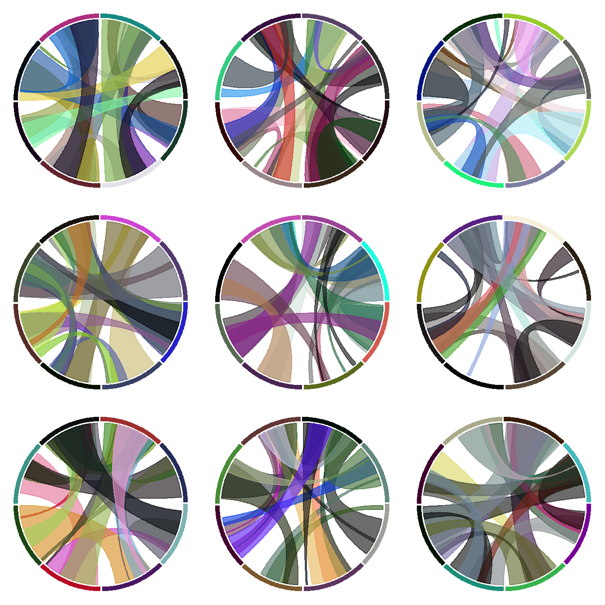

Related chart types

Chord diagram

Network

Sankey

Arc diagram

Edge bundling
Here is a trick to display several chord diagrams on the same figure, using R and the circlize package.
To arrange several circular charts in the same layout, simply use the layout() function as shown below.
This example comes from the circlize package vignette.

# library
library(circlize)
# Arrange the layout
layout(matrix(1:9, 3, 3))
# A loop to create 9 circular plots
for(i in 1:9) {
par(mar = c(0.5, 0.5, 0.5, 0.5), bg=rgb(1,1,1,0.1) )
factors = 1:8
circos.par(cell.padding = c(0, 0, 0, 0))
circos.initialize(factors, xlim = c(0, 1))
circos.trackPlotRegion(ylim = c(0, 1), track.height = 0.05, bg.col = rand_color(8), bg.border = NA )
# add links
for(i in 1:20) {
se = sample(1:8, 2)
circos.link(se[1], runif(2), se[2], runif(2), col = rand_color(1, transparency = 0.4))
}
circos.clear()
}Related chart types